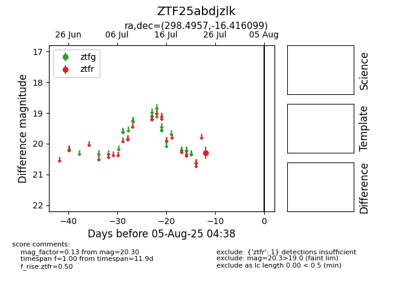

Target ZTF25abdjzlk at 2025-08-05 04:38, see:
FINK: fink-portal.org/ZTF25abdjzlk
Lasair: lasair-ztf.lsst.ac.uk/objects/ZTF25abdjzlk
ALeRCE: alerce.online/object/ZTF25abdjzlk
alt names
ZTF25abdjzlk (ztf,fink)
coordinates:
equatorial (ra, dec) = (298.4957,-16.41610)
galactic (l, b) = (24.7005,-21.03662)
photometry
last ztfr=20.30
1 ztfr detections
